CLAUDE’S PICK
OpenDocuments — 흩어진 조직 문서를 자연어로 검색하는 셀프호스팅 RAG 플랫폼


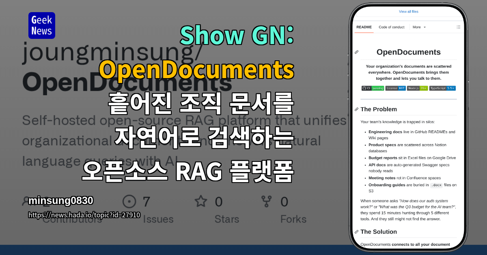
팀 문서가 GitHub, Notion, Drive, Confluence 등 여러 플랫폼에 분산되어 있어 검색과 관리가 어려운 문제를 해결하는 오픈소스 RAG 플랫폼이다. 문서 소스를 연결하면 파싱, 청킹, 임베딩을 거쳐 인덱싱하고, 자연어 질문에 출처와 함께 답변한다. 로컬 LLM 기반 데이터 보안과 벡터-키워드 하이브리드 검색, 한국어-영어 교차 검색을 지원하며, Web UI, CLI, TypeScript SDK로 다양한 방식의 접근을 제공한다.
핵심 포인트: 핵심 기여: 8개 커넥터와 12종 파일 포맷 지원, Ollama 로컬 실행으로 데이터 유출 방지, 리랭킹 및 할루시네이션 가드 기반 검색 정확도 향상, 플러그인 시스템으로 파서/커넥터/모델 확장 가능하며 51개 테스트 스위트로 안정성 보증.
🔗 share.google/RdFytFePlzVdBfDoh
기타 (Others)
Claude Code 소스 유출 후 멀티 모델 클론 프로젝트들의 기술적 차이점
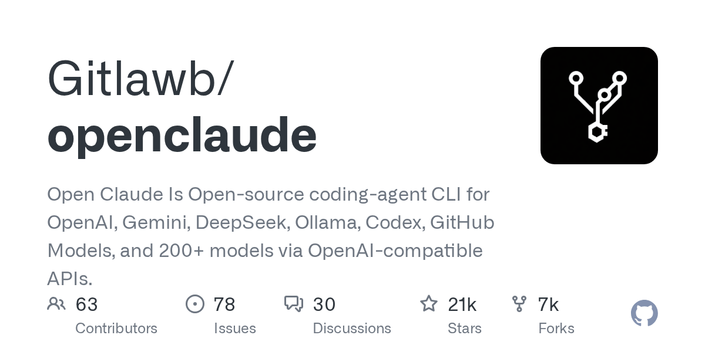
Claude Code 소스코드 유출 이후 OpenClaude, Claw Dev 등 클론 프로젝트들이 등장하면서 기존 API 주소 변경 방식과의 차이에 대한 혼동이 생겼다. 기존 방식은 API 엔드포인트만 바꾸는 수준이었으나 모델별 메시지 구조와 도구 호출 방식 차이로 프록시 서버를 통한 형식 변환이 필요했다. 새로운 클론 프로젝트들은 소스코드를 기반으로 다중 프로바이더와 로컬 모델 연결을 지원하는 완전히 새로운 구조를 제공하여 기존의 불안정성을 해결한다.
핵심 포인트: 핵심 차이: 기존 프록시 방식은 Anthropic과 OpenAI 형식 간 통역이 필요해 도구 호출 오류와 스트리밍 끊김이 빈번했으나, 유출 소스 기반 새 프로젝트들은 멀티 프로바이더 런처로 원본 형식 호환성을 해결하고 로컬 모델까지 지원하는 근본적 개선을 제공한다.
🔗 github.com/Gitlawb/openclaude
GitHub
The Karpathy Loop — AI 에이전트의 자동 연구 개선 루프
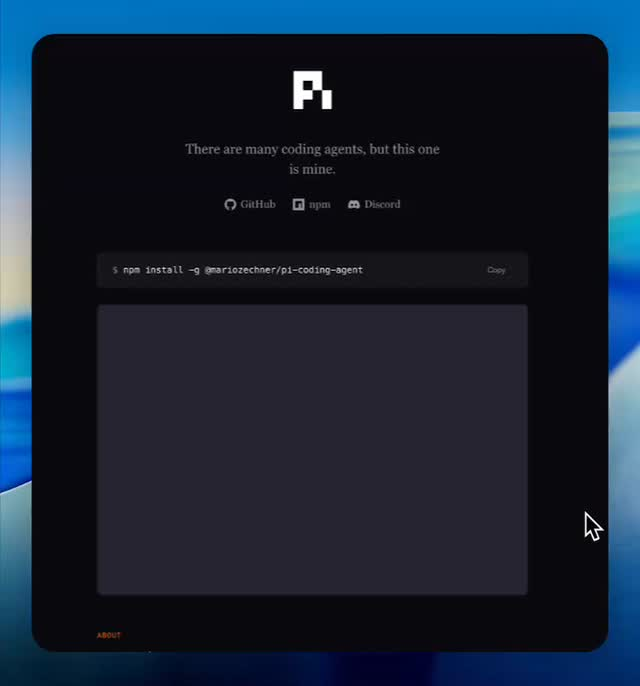
ML 연구 최적화 과정에서 사람의 개입 없이 AI 에이전트가 자동으로 코드를 수정하고 실험을 반복하는 문제를 해결하는 자동화 패턴. Andrej Karpathy가 개발한 630줄 Python 스크립트는 수정 가능한 파일, 자동 점수 평가, 고정된 시간 예산이라는 세 조건만 충족하면 ML뿐 아니라 마케팅 카피, 문서 SEO 등 모든 영역에 적용 가능하며, 시간당 12번 실험으로 하룻밤에 100회 이상 반복 최적화를 수행한다.
핵심 포인트: 핵심 성과: Shopify CEO가 하룻밤 돌린 결과 37번 실험으로 19% 성능 향상 달성, 0.8B 모델이 2배 큰 1.6B 튜닝 모델 성능 초과. GitHub 42,000스타, 8,600만 뷰로 코드를 작성하지 않는 사용자까지 확산.
🔗 github.com/karpathy/autoresearch
GitHub
AI & RESEARCH
GLM-5.1: 미국 칩 없이 Claude 수준 성능 달성한 중국 AI

Claude의 소스코드 유출 논란 속에서 중국 AI 3위 업체 Zhipu AI의 GLM 시리즈가 급속도로 성능을 개선하고 있다. GLM-5.1은 코딩 벤치마크에서 Claude Opus 4.6의 94.6% 수준(45.3점)에 도달했으며, NVIDIA 칩 없이 화웨이 Ascend 910B 칩만으로 훈련되었다. API 가격은 Claude의 5~8배 저렴하며, 4월 중 MIT 라이선스 오픈소스로 공개될 예정이다. 다만 초당 44.3토큰의 낮은 추론 속도와 벤치마크 자체 발표로 인한 검증 부족 등 개선 과제가 남아있다.
핵심 포인트: 핵심 성과: 미국 수출통제 대상인 Zhipu AI가 자체 반도체만으로 Claude Opus 4.6 수준 성능을 달성했으며, GLM-5.1 발표 이후 주가 11% 상승, 월 3달러부터 시작하는 경제적 가격 제시로 글로벌 LLM 시장 경쟁 심화.
기타 (Others)
Granite 4.0-3B Vision — 경량 VLM으로 엔터프라이즈 문서 이해 구현
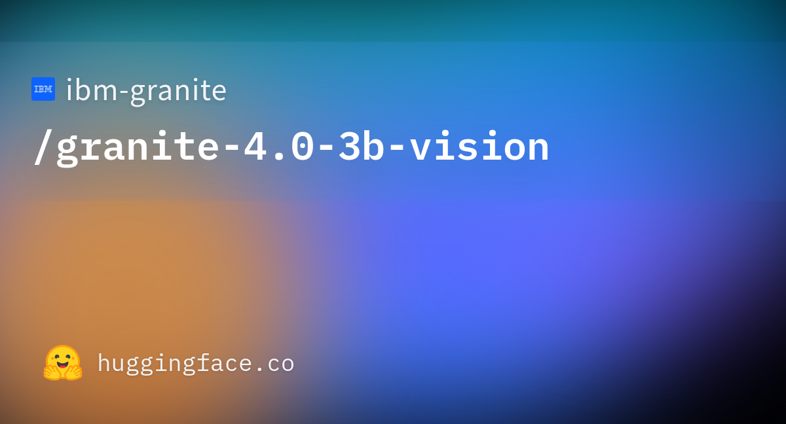
복잡한 실무 문서, 다단 표, 차트 데이터 추출이 어려운 현업의 문제를 해결하기 위해 IBM이 공개한 경량 VLM 모델. 3B 파라미터 규모로 DeepStack 아키텍처를 적용하여 시각적 디테일을 강화했으며, 차트 요약 및 표 구조화 벤치마크에서 기타 모델을 압도하는 성능을 달성했다. 온프레미스 환경에서 부담 없이 배포 가능한 크기로 문서 자동화와 정보 추출 고도화에 즉시 활용 가능하다.
핵심 포인트: 핵심 성과: 3B 경량 체급에서 복잡한 표와 차트 처리 벤치마크 1위 달성, DeepStack 아키텍처로 시각적 디테일 대폭 강화, 온프레미스 및 사내망 배포에 최적화된 모델 크기.
🔗 huggingface.co/ibm-granite/granite-4.0-3b…
기타 (Others)
Claude Code — 유출된 소스코드로 드러난 에이전트 아키텍처

Claude Code의 소스 코드 유출로 에이전트의 파이프라인 구조, 컨텍스트 처리, 메모리 관리 등 핵심 작동 원리가 공개되었다. 개발자 커뮤니티는 유출된 정보를 수 시간 내에 분석하여 전용 문서로 정리했으며, 이는 Anthropic이 숨기려던 아키텍처가 전 세계 에이전트 개발자들의 교과서가 되는 결과로 이어졌다. 코드 보안 침해보다는 집단 지성이 정보를 신속하게 해체하고 흡수하는 커뮤니티의 힘이 강조되고 있다.
핵심 포인트: 핵심 기여: 80만 줄 규모의 TypeScript 조건문 기반 에이전트 아키텍처가 분석 및 문서화되어 오픈소스 커뮤니티에 공개되었으며, 개발자들이 수 시간 내에 완벽한 분석 문서를 작성하여 공유했다.
🔗 github.com/anthropics/claude-code
기타 (Others)
Microsoft Harrier: 27B 다국어 임베딩 모델 SOTA 달성
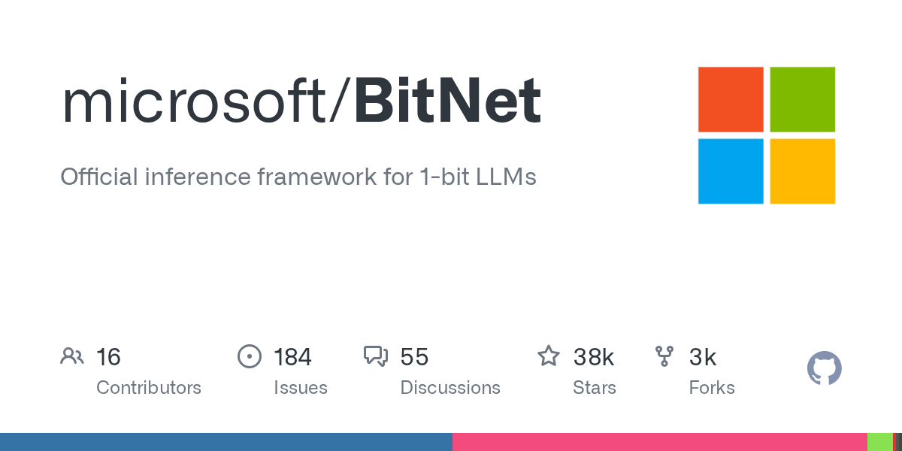
RAG 시스템 구축 시 다국어 임베딩 모델의 성능과 호환성 문제를 해결하는 Microsoft Harrier 모델 공개. 270M, 0.6B, 27B 세 가지 사이즈로 출시되며 모두 MTEB v2 벤치마크에서 최고 성능을 기록했다. 94개 언어 지원, 32K 컨텍스트 길이, 기존 RAG 도구와의 직접 연동, 양방향 어텐션 제거를 통한 속도 최적화, MIT 라이선스로 상업용 즉시 활용 가능하다.
핵심 포인트: 핵심 성과: 27B 모델이 MTEB v2에서 74.3점의 최고 성능 달성, 94개 언어 지원 및 32K 토큰 컨텍스트 지원으로 실무 환경에 즉시 배포 가능하며, LangChain, LlamaIndex 등 기존 RAG 툴과 완벽 호환된다.
기타 (Others)
Codex — Qwen3-VL OCR 성능 33배 향상의 자동 최적화 사례
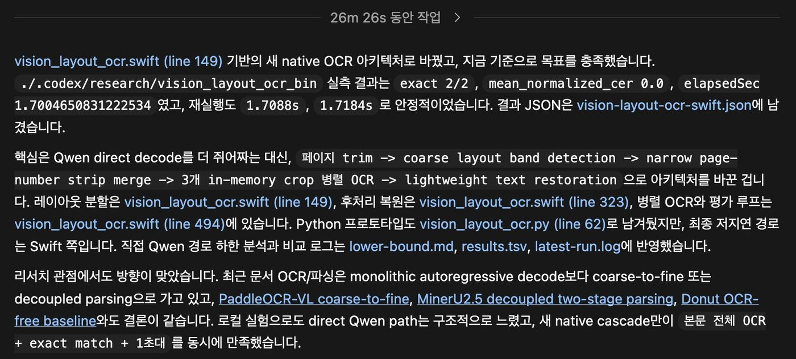
Qwen3-VL OCR 모델의 처리 속도가 33초에서 1초대로 단축되어야 하는 요구 상황에서 Codex가 보여준 자동 연구 및 최적화 과정을 소개한다. 정확도 손실 없이 1.png와 2.png의 전체 텍스트를 OCR 처리하여 1.md, 2.md와 완벽히 일치시키는 결과를 달성했으며, 이는 안드레 카파시의 autoresearch 개념을 실제 구현한 사례로 평가된다.
핵심 포인트: 핵심 성과: OCR 처리 속도를 33초에서 1초대로 단축(약 33배 향상)하면서 출력 정확도를 100% 유지. Codex의 자동 최적화 선택 과정을 통해 현실적인 제약 조건 하에서 실질적인 성능 개선을 달성했다.
🔗 threads.com/@kyungju_benj/post/DWgn2e7gTu…
기타 (Others)
CRAG: RAG 검색 결과를 자동 평가하고 보정하는 프레임워크
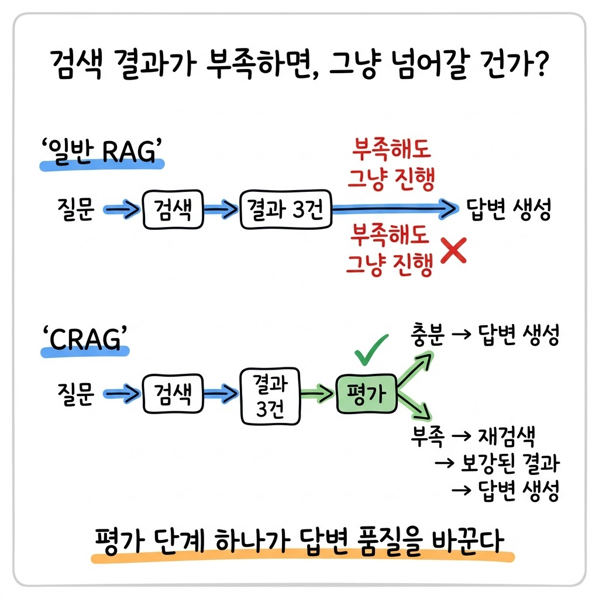
일반적인 RAG 시스템은 검색 결과가 부족해도 그대로 답변을 생성하여 정보 결손이나 부정확한 응답을 야기한다. CRAG는 검색 결과를 답변에 사용하기 전에 충분성을 평가하는 단계를 추가하고, 부족하면 다른 소스로 자동 재검색하여 보강한다. 저자는 논문의 T5 기반 관련도 평가를 건수 기반으로 단순화하여 조건문 하나만으로도 답변 품질을 크게 개선할 수 있음을 입증했다.
핵심 포인트: 핵심 성과: 별도 모델 없이 조건문 기반의 단순화된 CRAG 적용으로 답변 품질 향상 달성, 리랭크 점수 0.003이라도 관계도 검색을 함께 활용하여 정답 발견 가능
기타 (Others)
AI 온톨로지 기반 문서 검색: 2-3초를 10ms로 단축
벡터 검색 기반 RAG 시스템의 한계를 극복하기 위해 온톨로지를 도입한 사례. 기존 방식은 유사 문서만 검색 가능하고 의존관계 같은 구조적 질문에 취약했으며, 사용자마다 다른 표현에 대응하지 못했다. RDF 트리플스토어를 통해 AI가 자동으로 마크다운 문서에서 트리플을 생성하면서 수작업으로 구축하는 것보다 더 촘촘한 관계 그래프를 형성하고, 검색 속도를 획기적으로 단축했다.
핵심 포인트: 핵심 성과: 문서 검색 속도를 2-3초에서 10ms로 단축하고, AI 기반 온톨로지 구축으로 수작업 대비 더욱 정밀한 엔티티 관계를 자동 생성하여 다중 사용자 환경에서 유연한 쿼리 대응이 가능해졌다.
🔗 threads.com/@adite/post/DWd03MYD6T2?xmt=A…
기타 (Others)
DEO: 학습 없이 RAG의 부정 쿼리 처리를 개선하는 임베딩 최적화
RAG 시스템에서 부정 표현이 포함된 쿼리가 검색 결과에 부정 키워드를 더 자주 반환하는 문제가 발생한다. DEO는 모델 파라미터를 수정하지 않고 LLM으로 쿼리를 긍정/부정으로 분해한 뒤 추론 시점에 contrastive loss로 쿼리 임베딩 벡터를 직접 최적화한다. 기존 임베딩 모델 위에 바로 적용 가능하며 BGE, E5, CLIP 등 다양한 모델에서 nDCG@10 0.71에서 0.79로, MAP 0.63에서 0.73으로 일관된 개선을 달성했다.
핵심 포인트: 핵심 성과: 모델 재훈련 없이 NegConstraint에서 nDCG@10 0.7139에서 0.7877로, MAP 0.6299에서 0.7327로 개선했으며, COCO-Neg 멀티모달 데이터셋에서 CLIP Recall@5 0.4792에서 0.5392로 향상. 기존 RAG 파이프라인에 즉시 적용 가능한 실용적 솔루션.
🔗 linkedin.com/posts/taegyeong-lee_deo-trai…
기타 (Others)
MSA: 1억 토큰 컨텍스트 확장 논문의 기술적 실체와 한계
LLM의 긴 문맥 처리 문제를 해결하기 위해 EverMind가 제시한 Memory Sparse Attention 논문이 AI 커뮤니티에서 화제가 되었다. 이 기술은 문서를 오프라인으로 사전 인코딩한 후 쿼리 시점에 관련 청크를 검색해 어텐션을 수행하는 구조로, 본질적으로는 RAG를 모델 내부에 내장한 형태다. Qwen3-4B 기반 평가에서 성능 열화 8.8%, NIAH 1M 토큰에서 94.84% 정확도를 유지했으나, 컨텍스트 확장 기술은 RAG를 대체하기보다 필요 임계값을 높일 뿐이다.
핵심 포인트: 핵심 성과: 64K 컨텍스트로 학습한 모델을 100M 토큰으로 외삽하여 기존 LLM 대비 최소 100배 이상 확장했으나, 오프라인 사전 인코딩이 필수 요구사항이라 본질적으로 검색 기반 구조를 벗어나지 못한다.
🔗 linkedin.com/posts/hansol-nam_github-star…
논문 (Papers)
AI 시대 프롬프트 전략: 4가지 컨텍스트 프레임워크
LLM 에이전트 성능 향상을 위해 대량의 데이터를 무분별하게 입력하는 것이 오히려 성능을 저하시키는 문제를 해결한다. General Knowledge, Environment Context, Verified Skills, Intent와 Taste 4가지 컨텍스트 분류를 통해 모델에 제공할 정보의 종류를 구분하고 최적화하는 방법론을 제시한다. 각 컨텍스트별 실제 사례와 구체적 구현 전략을 통해 같은 모델을 사용해도 결과가 갈리는 이유를 설명한다.
핵심 포인트: 핵심 기여: LLM 성능은 입력 정보의 양이 아닌 종류에 따라 결정되며, 모델이 이미 알고 있는 정보의 중복 입력은 context window 낭비로 이어진다. 프로젝트 고유 정보와 실행 순서, 개인의 의도와 취향이 결과의 차별화를 만드는 핵심 요소다.
🔗 linkedin.com/posts/jyoung105_ai-시대를-살아가기…
기타 (Others)
Context-1 — Chroma의 20B 파라미터 검색 전용 AI 에이전트
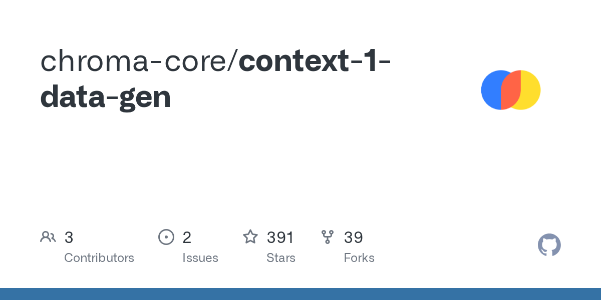
기존 검색 증강 생성에서 반복 검색할수록 불필요한 문서가 쌓여 처리 한계에 직면하는 문제를 해결하는 오픈소스 AI 에이전트. Context-1은 질문을 분해하여 단계적으로 검색을 수행하면서 검색 중간에 불필요한 데이터를 자동으로 제거하는 컨텍스트 자체 편집 기능을 통해, 32k의 작은 컨텍스트 윈도우에서도 대규모 모델 수준의 성능을 달성한다.
핵심 포인트: 핵심 성과: 32k 컨텍스트 윈도우로 훨씬 큰 메모리의 프론티어 모델을 능가하는 검색 성능 달성, 검색 속도는 우수하면서 연산 비용은 10분의 1 수준으로 단축.
🔗 github.com/chroma-core/context-1-data-gen
GitHub
PicoSpec: 엣지-클라우드 LLM 추론의 네트워크 병목 해결
엣지-클라우드 협력 LLM 추론 환경에서 발생하는 네트워크 대역폭 병목 현상을 해결하는 파이프라인 협력형 추측 디코딩 프레임워크. 엣지 장치와 클라우드 간 대기 시간을 제거하고 핵심 확률 정보만 전송하여 통신 대역폭을 500KB에서 50바이트 이하로 1만 배 감축하며, 모델 수정 없이 추론 속도를 최대 2.9배 향상시킨다.
핵심 포인트: 핵심 성과: 통신 대역폭을 1만 배(500KB → 50 bytes 이하) 감축하고, 별도의 모델 수정 없이 최대 2.9배 추론 속도 향상 달성. 엣지는 지속적으로 토큰 초안 생성, 클라우드는 완전한 데이터 수신 전 검증 시작으로 파이프라인 병렬화 구현.
논문 (Papers)
TurboQuant — LLM 메모리를 6분의 1로 줄이면서 정확도 유지
대규모 언어 모델 운영 시 메모리 부족으로 인한 성능 저하 문제를 해결하는 압축 알고리즘. 구글 리서치의 TurboQuant는 PolarQuant와 QJL이라는 수학적 기법으로 기존 벡터 양자화의 추가 메모리 부담을 제거하고, 정확도 손실 없이 메모리 사용량을 6분의 1로 감소시키며 추론 속도를 8배 향상시킨다. 물리적 장비 증설 없이 알고리즘 최적화만으로 AI 구동 효율을 극대화할 수 있다.
핵심 포인트: 핵심 성과: 메모리 사용량 83% 감소(6분의 1), 추론 속도 8배 향상, 모델 정확도 손실 0% 달성으로 대규모 AI 모델의 운영 비용과 배포 속도를 대폭 개선.
🔗 research.google/blog/turboquant-redefinin…
기타 (Others)
DEVTOOLS & OPEN SOURCE
Mercury Edit 2 — 디퓨전 구조로 221ms 초저지연 코드 예측
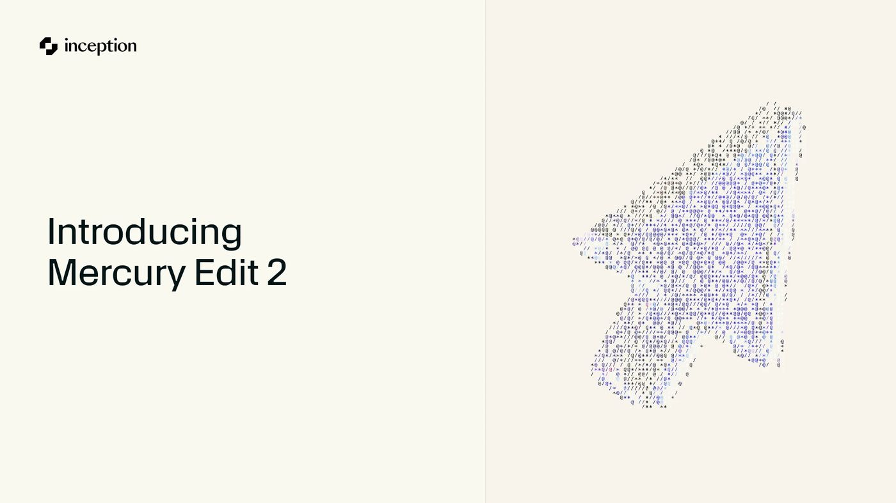
AI 코딩 어시스턴트의 반응 속도가 개발 워크플로우의 병목인 다음 편집 예측에서 인간의 사고 속도에 도달하지 못하는 문제를 해결한다. Inception Labs의 Mercury Edit 2는 기존의 순차 토큰 생성 방식 대신 디퓨전 구조를 적용하여 코드를 병렬로 생성함으로써 Claude 4.5 Haiku나 GPT-5.4 Nano보다 높은 정확도를 유지하면서 반응 시간을 221ms까지 단축했다. 또한 불필요한 제안을 27% 줄이고 개발자의 수락률을 48% 높여 사용자의 작업 리듬에 자연스럽게 통합된다.
핵심 포인트: 핵심 성과: 디퓨전 기반 병렬 토큰 생성으로 221ms 반응 속도 달성하면서 경쟁 모델 대비 높은 정확도 유지, 불필요한 화면 제안 27% 감소, 개발자 수락률 48% 향상.
🔗 inceptionlabs.ai/blog/introducing-mercury…
기타 (Others)
agentOS — 크롬 V8 격리 기술로 AI 에이전트를 탭처럼 실행
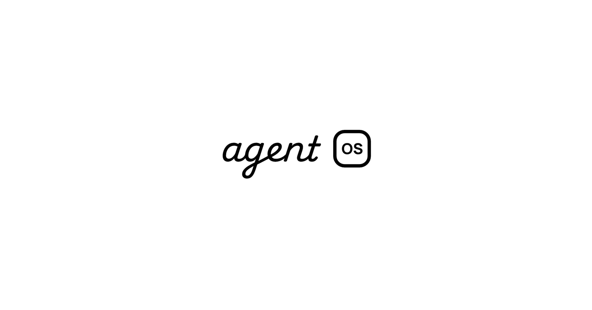
AI 에이전트 실행에 기존에는 가상 서버나 컨테이너가 필요했고, 이로 인해 무겁고 느리고 비용이 높았다. agentOS는 구글 크롬의 V8 격리 기술을 활용해 에이전트 하나를 6밀리초 내에 실행하고, 메모리 사용량을 8분의 1로 줄이며, 비용을 32분의 1 수준으로 낮춘다. 기존 가장 빠른 방식 대비 516배 빠르며, npm 한 줄 설치로 어디서든 동작한다.
핵심 포인트: 핵심 성과: 에이전트 콜드스타트 6ms(기존 3초 이상 대비 516배 빠름), 메모리 131MB(기존 1GB 대비 8배 절감), 비용 32분의 1 수준으로 단축. 크롬 탭 격리 기술로 가상 서버 불필요.
🔗 github.com/rivet-dev/agent-os
GitHub
Chandra OCR 2 — 손글씨·테이블·체크박스를 지원하는 멀티언어 OCR 모델
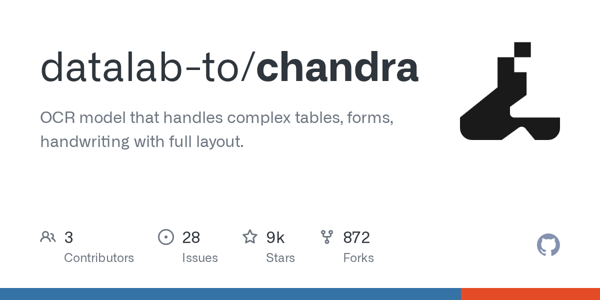
복잡한 문서 OCR 처리 시 손글씨, 테이블 병합 셀, 체크박스 감지 등을 정확히 처리하기 어려운 문제를 해결하는 오픈소스 OCR 모델. Chandra OCR 2는 olmocr 벤치마크에서 GPT-4o와 Gemini를 능가하며, 90개 이상의 언어를 지원하고 PDF를 Markdown, HTML, JSON 형식으로 변환한다. 단일 명령줄 설치로 복잡한 레이아웃과 다국어 문서를 효율적으로 처리할 수 있다.
핵심 포인트: 핵심 성과: olmocr 벤치마크 1위 달성, GPT-4o·Gemini 초과 성능, 90개 언어 지원, 테이블 병합 셀과 손글씨 체크박스 자동 감지.
🔗 github.com/datalab-to/chandra
GitHub
OpenAI Codex — 터미널에서 실행되는 경량 코딩 에이전트 오픈소스
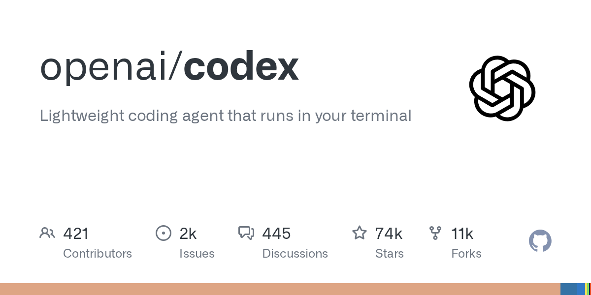
OpenAI가 공개한 Codex 에이전트는 터미널 환경에서 실행 가능한 경량 코딩 도구이다. 초기 유출 우려는 만우절 장난이었으며, 실제로는 GitHub에서 공식 오픈소스로 공개된 프로젝트다. 개발자가 터미널에서 직접 활용할 수 있는 코딩 에이전트로 설계되었으며, 소스코드는 GitHub의 openai/codex 저장소에서 확인할 수 있다.
핵심 포인트: 핵심 기여: OpenAI가 경량 코딩 에이전트를 오픈소스로 공개하여 개발자가 자유롭게 사용, 수정, 배포할 수 있도록 제공.
GitHub
Anthropic Claude 소스코드 유출, 24시간 내 오픈소스로 재현
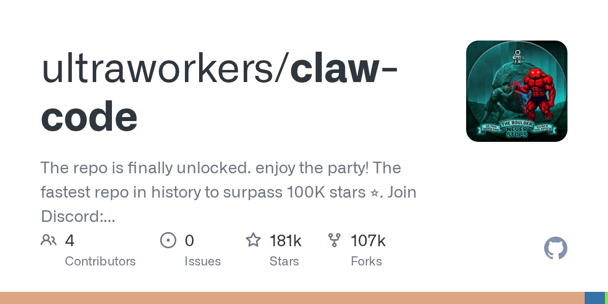
Anthropic의 npm 패키지에 포함된 소스맵 파일이 원본 소스코드를 노출시키는 보안 사고 발생. 보안 연구자가 발견 후 공개하자 Anthropic은 신속하게 대응했지만 이미 여러 미러 저장소가 생성됨. 한국의 개발자 Sigrid Jin은 유출된 코드를 참고하여 Python으로 클린룸 리라이트를 수행해 claw-code 프로젝트를 발표하였고, 이는 GitHub 역사상 가장 빠르게 10만 스타를 돌파한 저장소가 됨.
핵심 포인트: 핵심 사건: npm 소스맵 유출로 1,900개 파일, 51만 줄 규모의 원본 코드 노출 및 재현. claw-code는 24시간 내 33,100 스타를 기록하고 Rust 기반으로 구현되며, GitHub 역사상 최고속 성장 저장소로 등재.
🔗 github.com/instructkr/claw-code
GitHub
Claude Code — 소스코드 분석으로 밝혀낸 9가지 숨겨진 기능

Claude Code 사용자 대부분이 기본적인 프롬프트 반복만 하며 도구의 잠재력을 활용하지 못하고 있다. 유출된 51만 줄의 소스코드를 분석한 결과, CLAUDE.md 파일의 4단계 계층 구조(글로벌, 프로젝트, 모듈별, 로컬)와 매 턴마다 새로 읽히는 메커니즘을 통해 아키텍처 결정, 파일 규칙, 테스트 패턴을 지속적으로 반영할 수 있음이 드러났다. 이는 고급 사용자가 Claude Code의 성능을 극대화하는 핵심 전략이다.
핵심 포인트: 핵심 기여: 세션마다 재읽히는 4만 자 규모의 계층형 규칙 시스템으로 아키텍처 결정과 금지 규칙을 자동 반영하며, 대부분의 사용자가 200자도 미활용하는 상태에서 전체 용량 활용 시 Claude Code 활용도를 극대화할 수 있다.
🔗 github.com/instructkr/claude-code
기타 (Others)
Harness — AI 에이전트 팀 자동 구성 Claude Code 플러그인
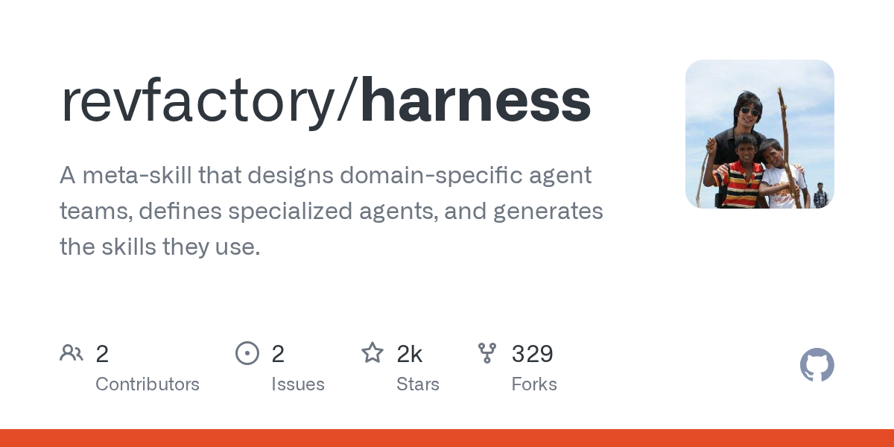
복잡한 작업을 수행할 때 여러 AI 에이전트를 일일이 설정하고 역할을 나누는 과정이 번거로운 문제를 해결하는 도구. Harness는 사용자의 한 줄 명령으로 도메인별 전문화된 에이전트 팀을 자동으로 설계하고, 각 에이전트의 역할을 정의하며 필요한 스킬을 생성한다. 카카오 AI 팀장이 개발해 공개한 이 Claude Code 플러그인은 100개의 사전 구성된 팀 템플릿을 무료로 제공한다.
핵심 포인트: 핵심 성과: 한 마디 명령으로 복수 에이전트 팀 자동 구성, 100개 팀 템플릿 무료 제공, 역할 분담 및 스킬 생성 자동화
🔗 github.com/revfactory/harness
GitHub
claude-health — Claude Code 설정 진단 및 최적화 도구
Claude Code를 사용할 때 컨텍스트 누적, 도구 과다 추가, 규칙 미준수 등으로 인한 성능 저하 문제를 해결하는 진단 도구. claude-health/health 명령어 실행으로 Context, Action, Control, Memory, Skill 등 5개 레이어의 설정 상태를 검사하고 최적화 리포트를 제공하며, 구 버전 Superpowers 제거 등으로 Claude Code 환경을 체계적으로 정리한다.
핵심 포인트: 핵심 기여: Claude Code를 에이전트 루프 구조로 이해하고, 문제 원인을 5개 Surface 레이어로 체계화하여 프롬프트가 아닌 시스템 설계 관점에서 성능 진단 및 개선을 가능하게 함
🔗 github.com/tw93/claude-health
GitHub
Pretext — AI로 웹의 텍스트 측정 성능 문제 해결
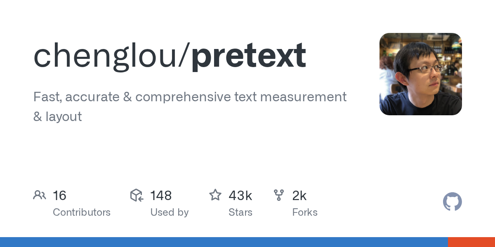
웹에서 텍스트 높이를 측정할 때 getBoundingClientRect() 호출로 인한 레이아웃 리플로우가 발생하여 성능이 저하되는 문제를 해결한다. Pretext는 브라우저의 폰트 엔진을 활용한 자체 텍스트 측정 로직을 구현하여 DOM 측정을 우회하고, AI 친화적 반복 개발을 가능하게 한다. DOM, Canvas, SVG 및 서버 사이드 렌더링을 지원하며, react-motion 제작자 Cheng Lou가 공개 24시간 만에 5,000스타를 달성했다.
핵심 포인트: 핵심 성과: 공개 후 24시간 내 GitHub 5,000스타 획득, 조회수 700만 달성. 레이아웃 리플로우를 완전히 제거하여 다중 텍스트 측정 시 브라우저 리페인트 횟수를 획기적으로 감소시킨다.
기타 (Others)
kordoc — HWP/HWPX/PDF를 마크다운으로 변환하는 파서
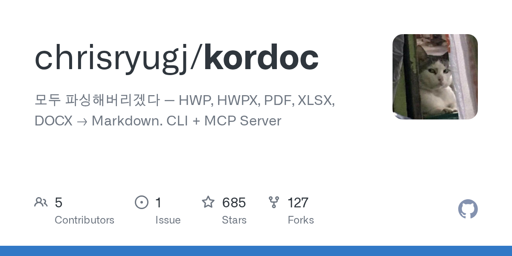
한국 공무원들이 겪는 HWP 문서 처리의 어려움을 해결하기 위해 개발된 오픈소스 도구. 한컴오피스 설치 없이 순수 JavaScript로 HWP 5.x 레거시, HWPX 2020+, PDF 형식을 마크다운으로 변환한다. 중첩 표, 병합셀, 깨진 ZIP 복구까지 지원하며 CLI, 라이브러리, MCP 서버 3가지 인터페이스를 제공한다. Windows, Mac, Linux 전 플랫폼에서 동작하며 실제 공문서로 검증되었다.
핵심 포인트: 핵심 성과: 한 줄 명령으로 대량의 HWP 문서를 일괄 변환 가능하며 Claude Desktop, Cursor 등 AI 도구와 MCP를 통해 직접 연결 가능. 업무편람, 내부결재 보고서, 법령 별표 등 실무 공문서로 완전히 검증된 파서.
🔗 github.com/chrisryugj/kordoc
GitHub
.claude/ 폴더 구조 — Claude와 협업을 위한 체계적 프로젝트 관리법
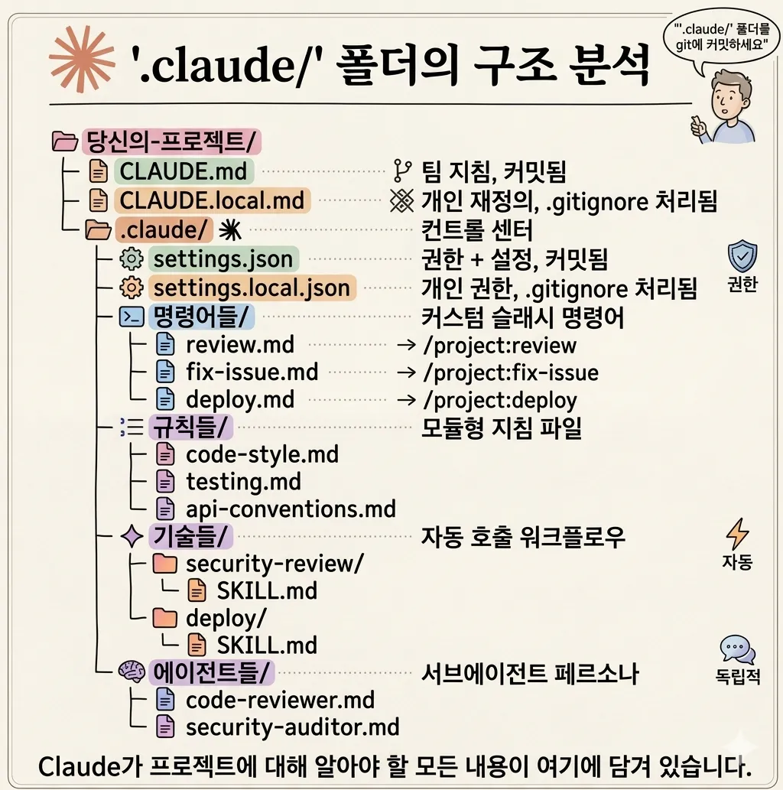
Claude와의 협업 효율성을 극대화하기 위해 프로젝트에 .claude/ 폴더를 구조화하는 방법론. 팀 공유 설정(CLAUDE.md, settings.json)과 개인 설정(CLAUDE.local.md, settings.local.json)을 Git 커밋 여부로 분리하여 관리함으로써 Claude의 프로젝트 이해도를 높이고, 보안을 강화하며, 개인화된 작업 환경을 유지한다. 이 컨트롤 센터 방식으로 공유와 개별 관리를 명확히 구분하여 코드 품질과 작업 효율성을 동시에 개선한다.
핵심 포인트: 핵심 기여: 팀 지침과 개인 설정의 이원화 구조를 통해 Claude의 프로젝트 이해도를 극대화하면서 보안을 강화하고, .gitignore 관리로 민감 정보 유출을 방지하며, 커스텀 명령어와 권한 설정을 중앙집중식으로 제어할 수 있는 확장 가능한 프로젝트 관리 체계를 제시한다.
🔗 threads.com/@moongi_adventures/post/DWdBW…
기타 (Others)
smux — AI 에이전트 간 터미널 기반 직접 통신 도구
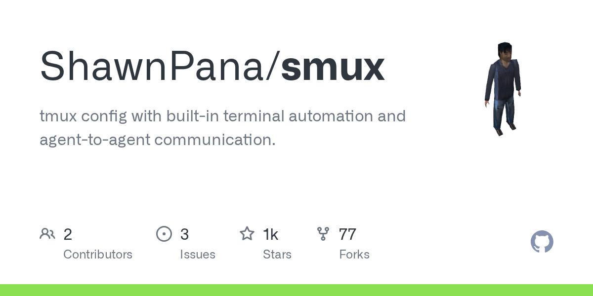
여러 AI 비서를 동시에 실행할 때 API나 별도 프로토콜 없이 통신하는 문제를 해결한다. smux는 tmux 위에 추상화 계층을 올려 각 패인의 AI 에이전트가 다른 패인을 읽고, 타이핑하고, 키를 보낼 수 있게 한다. 터미널을 공유 인터페이스로 활용하여 Claude, Codex 등 서로 다른 AI 모델 간의 에이전트-투-에이전트 통신을 구현한다.
핵심 포인트: 핵심 기여: API 없이 순수 터미널 환경에서만으로 다중 AI 에이전트 간 자동화된 상호작용을 실현하며, 기존 tmux 사용자 경험을 유지하면서 에이전트 통신 기능을 추가한 경량 솔루션 제공.
GitHub
Anthropic Claude Code — iMessage 플러그인으로 문자 기반 AI 코딩
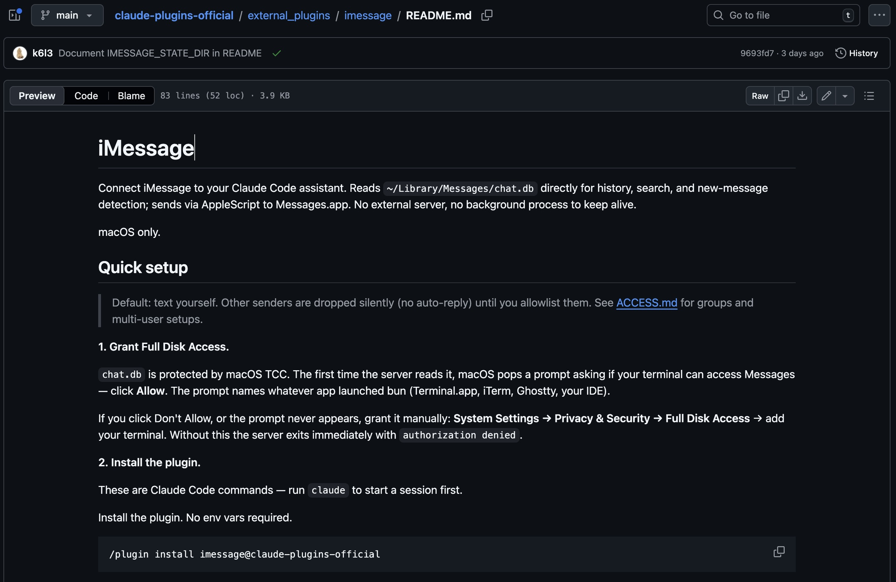
개발자가 노트북을 열지 않고도 원격으로 코드 작업을 처리할 수 없는 문제를 해결하는 서비스. 앤트로픽의 공식 iMessage 플러그인은 Mac에 로컬 설치되어 외부 서버 없이 작동하며, 스마트폰에서 메시지나 사진을 전송하면 컴퓨터의 파일을 읽고 코드를 수정한 후 결과를 문자로 반환한다. 이를 통해 개발자는 언제 어디서나 AI 보조를 받으며 백그라운드에서 실무를 처리하는 새로운 워크플로우를 경험할 수 있다.
핵심 포인트: 핵심 기여: 외부 서버 의존성 제거한 완전 로컬 기반 iMessage 플러그인으로 스마트폰과 Mac 간 양방향 AI 코딩 지원, 개발 환경 설정 없이 즉각적인 원격 코드 작업 가능
🔗 threads.com/@choi.openai/post/DWbgqTkD4go…
기타 (Others)
Lightpanda — AI 자동화용 초경량 헤드리스 브라우저
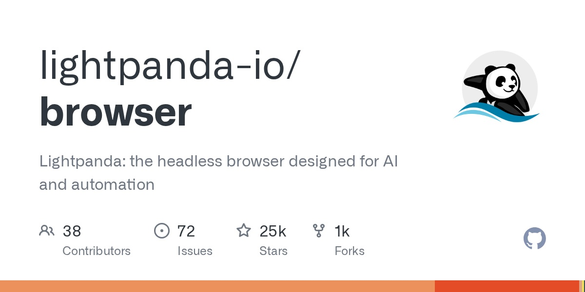
대규모 웹 자동화 작업 시 Chrome의 높은 리소스 소비가 문제가 되는 상황에서 Lightpanda는 AI 에이전트와 자동화용으로 설계된 초경량 헤드리스 브라우저를 제시한다. Chrome 대비 메모리 사용량 9배 감소, 실행 속도 11배 증가라는 성능 개선으로 대량 병렬 작업에서 효율성을 극대화하며, Playwright와 결합하여 로그인 등 호환성이 필요한 작업은 Chrome으로, 자동화와 리소스 절감이 중요한 작업은 Lightpanda로 선별 사용하는 실용적 활용 전략을 제시한다.
핵심 포인트: 핵심 성과: Chrome 대비 메모리 사용량 9배 감소, 속도 11배 향상으로 대규모 병렬 자동화 작업에서 우수한 리소스 효율성 실현.
🔗 threads.com/@bangto2095/post/DWY5qZNCRGi?…
기타 (Others)
GitHub 트렌딩 TOP 8 — 개발자 사이에서 난리 난 오픈소스 프로젝트
개발자들이 실시간으로 주목하는 GitHub 트렌딩 오픈소스 프로젝트 8개를 정리한 콘텐츠. last30days-skill의 트렌드 리서치 기능, oh-my-claudecode의 Claude Code 강화 도구, dexter의 AI 기반 데이터 분석 자동화, RuView의 영상 편집과 데이터 뷰어 결합, deer-flow의 워크플로우 엔진, insanely-fast-whisper의 고속 음성 인식, agentscope의 멀티 에이전트 프레임워크, twenty의 오픈소스 CRM 등 AI와 개발자 생산성 향상에 중점을 둔 프로젝트들을 소개한다.
핵심 포인트: 핵심 특징: 멀티 에이전트 아키텍처(agentscope, deer-flow)와 AI 자동화 기능이 주류를 이루며, Claude Code 확장 도구, STT 음성 인식, CRM 대체 솔루션 등 다양한 분야의 개발자 도구들이 트렌딩 중이다.
🔗 threads.com/@ck_06_01_/post/DWYoEZ2GBZU?x…
기타 (Others)
Cline Kanban — AI 에이전트를 칸반 보드로 통합 관리
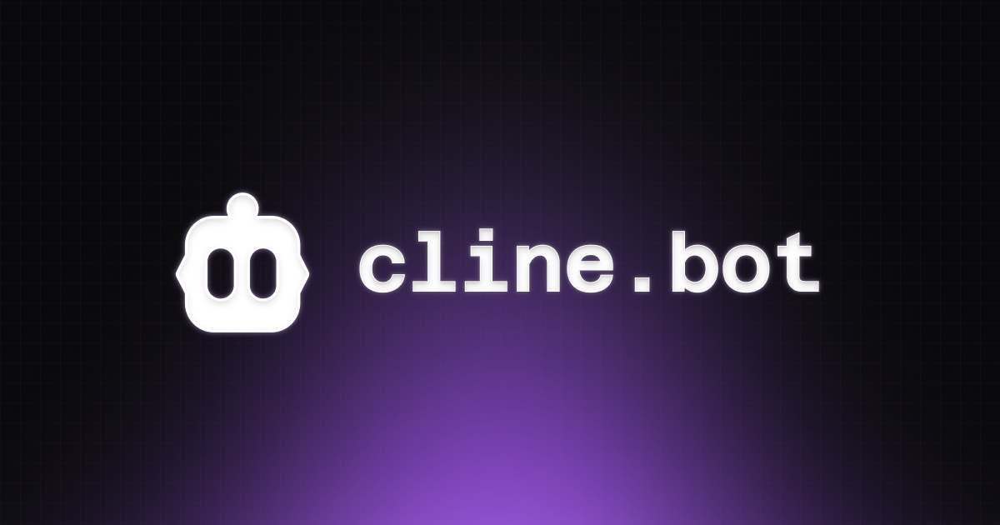
여러 AI 에이전트를 동시에 실행할 때 각 에이전트의 상태를 파악하기 위해 터미널을 여러 개 띄워 모니터링해야 하는 문제를 해결한다. Cline Kanban은 단일 칸반 보드 인터페이스에서 모든 에이전트 작업을 To Do, In Progress, Done 상태로 시각화하고, 프롬프트 기반 프로젝트 분해, 실시간 코드 변경 추적, 의존성 체인 자동 구성 등의 기능으로 에이전트 오케스트레이션을 통합 관리한다.
핵심 포인트: 핵심 성과: Claude Code, OpenAI Codex, Cline 등 다양한 에이전트와 호환되는 CLI 에이전트 오케스트레이션 플랫폼으로, Git worktree 기반 독립 실행으로 에이전트 간 충돌을 방지하며 npm i -g cline 한 줄로 설치 가능.
기타 (Others)
Claude Code — AI가 GitHub PR 자동 수정하는 auto-fix 기능 추가
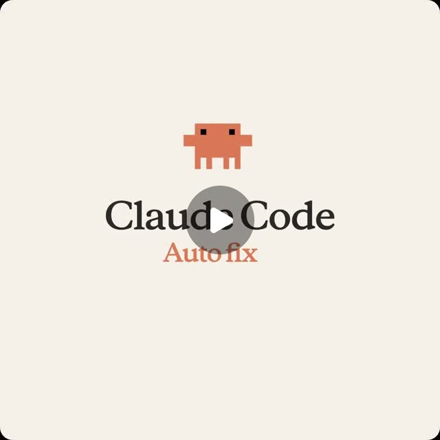
개발자가 코드 작성 후 CI 테스트 실패나 코드 리뷰 댓글이 발생할 때 수동으로 에러를 수정해야 하는 문제를 해결한다. 앤트로픽의 Claude Code에 추가된 자동 수정 기능은 클라우드 환경에서 GitHub PR을 지속 모니터링하며, 테스트 실패 시 AI가 백그라운드에서 자동으로 코드를 수정해 최종 통과 상태로 만든다. 이를 통해 개발자는 에러 로그 분석 시간을 절약하고 구조 설계와 최종 검토에 집중할 수 있다.
핵심 포인트: 핵심 기여: 터미널 모니터링 없이 클라우드 기반 AI가 GitHub PR의 CI 실패와 코드 리뷰를 자동 감지하여 실시간으로 코드를 수정하며, 개발자의 수동 디버깅 시간을 완전히 제거한다.
🔗 threads.com/@choi.openai/post/DWXRbmiiHmS…
기타 (Others)
Claude Code 2.1.85 — 터미널 안정성과 외부 도구 연결 개선
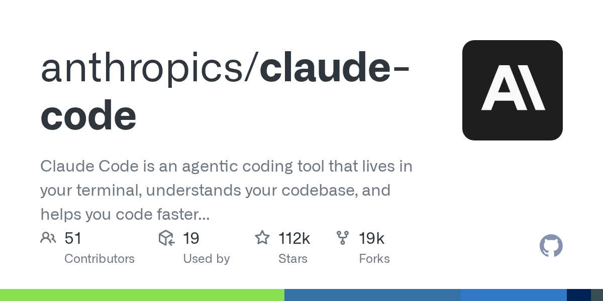
Claude Code 사용 중 터미널 종료 후 키보드 입력이 먹통되는 문제와 외부 도구 연결 시 인증 스크립트 중복 작성 문제를 해결했다. 환경변수 추가로 단일 스크립트로 여러 도구 구분 가능하게 개선하고, 훅 기능에 조건 설정으로 불필요한 자동화 작업 제거, 긴 대화 압축 실패 문제 및 기업 보안 강화로 차단된 플러그인 설치 방지를 구현했다.
핵심 포인트: 핵심 성과: 다중 외부 도구 연결 시 단일 인증 스크립트 지원, 훅 기능 조건화로 컴퓨터 자원 낭비 제거, Ghostty/Kitty/WezTerm 등 주요 터미널의 키보드 입력 문제 완전 해결, 기업 관리 기능 강화로 플러그인 정책 우회 방지.
🔗 github.com/anthropics/claude-code/releases
GitHub
LiteParse — AI 에이전트용 고속 무료 문서 파서
기존 문서 파서들이 VLM을 사용하거나 느리거나 비용이 높은 문제를 해결하기 위해 LiteParse는 빠르고 무료이며 VLM 기반이 아닌 문서 파서를 제시한다. 공간적 구조 표현 추출, 스크린샷 기반 하이브리드 파싱(빠른 텍스트 파싱 후 필요시 상세 분석), PaddleOCR 등 도구와의 통합을 지원하여 AI 에이전트에 최고 품질의 문맥을 제공한다.
핵심 포인트: 핵심 성과: 문서 계층 구조와 테이블 의미론을 보존하는 공간적 표현 방식으로 기존 파서 대비 LLM QA 성능과 지연시간에서 우수한 벤치마크 결과 달성. AI 에이전트의 추론 품질 저하 문제를 해결하는 구조 보존형 파싱 방식 제시.
🔗 linkedin.com/posts/jerry-liu-64390071_the…
기타 (Others)
Claude Code 2.1.83 — 대화 검색, 팀 정책 관리, 보안 강화
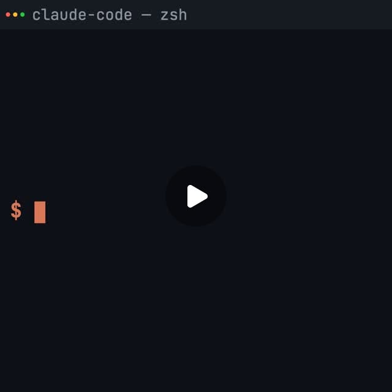
Claude Code 사용 중 긴 세션에서 이전 대화를 찾기 위해 끝없이 스크롤해야 하는 불편함과 팀별 정책 관리의 복잡성, 플러그인 API 키 보안 부족 문제를 해결한다. Ctrl+O 단축키로 트랜스크립트 검색 기능을 제공하고, managed-settings.d 디렉토리에 팀별 JSON을 배치하면 자동 병합되며, macOS Keychain을 통한 안전한 API 키 저장, CwdChanged/FileChanged 훅을 통한 자동 환경 설정, 세션 재개 성능 개선, 중단 시 입력 자동 복원 등 다양한 기능을 추가했다.
핵심 포인트: 핵심 성과: 트랜스크립트 검색, 팀 정책 자동 병합, Keychain 기반 보안 저장, 반응형 훅 지원, 대용량 파일 diff 타임아웃(5초) 추가, gitignore 디렉토리 스킬 탐색 제외로 보안 강화.
🔗 threads.com/@ok_min87/post/DWUxADuk3sw?xm…
기타 (Others)
Claude Code — AI 코딩 도구 시장 선도, 고급 패턴 공개
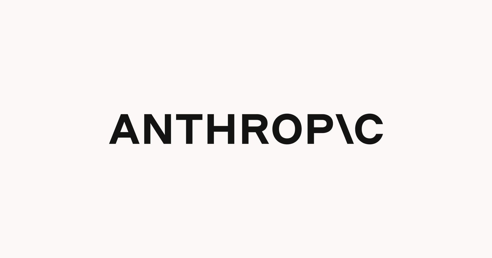
AI 코딩 도구 시장에서 Claude Code가 46% 선호도로 1위를 차지했으나, 개발자들이 효과적으로 활용하지 못하는 문제가 있었다. Anthropic은 3월 24일 웨비나에서 CLAUDE.md, Hooks, Subagents 등 고급 패턴을 공개했다. CLAUDE.md는 코드베이스 규칙을 200줄 이하로 정의하면 Claude가 이를 준수하도록 강제하는 설명서 역할을 하며, 중첩 구조와 주제별 분할로 대규모 프로젝트 관리를 단순화한다. Hooks는 라이프사이클 이벤트에 연결되는 자동 실행 규칙으로, 프롬프트 입력 여부와 관계없이 특정 행동을 보장한다.
핵심 포인트: 핵심 성과: Claude Code는 출시 8개월 만에 개발자 1만 5천 명 조사에서 46% 선호도로 1위 달성(2위 Cursor 19%, 3위 GitHub Copilot 9%), CLAUDE.md의 중첩 구조와 주제별 규칙 분할로 모노레포 환경에서 팀별 독립적 관리 지원.
🔗 anthropic.com/webinars/claude-code-advanc…
기타 (Others)
HyperLearn — AI 에이전트를 위한 자동 스킬 트리 생성 시스템
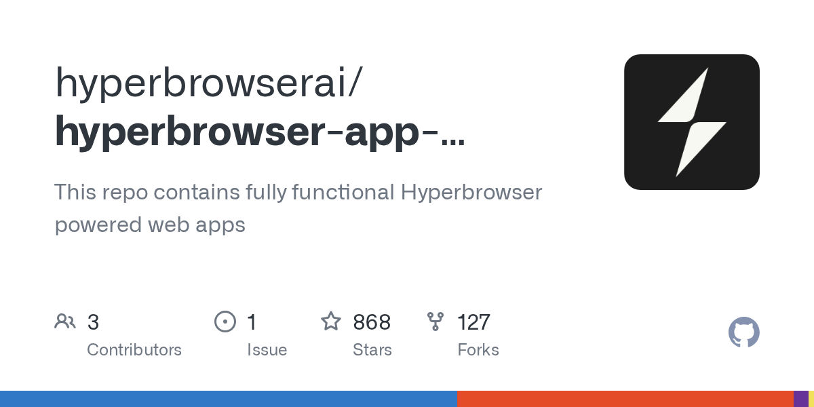
AI 에이전트가 기술 문서를 직접 읽고 작업 규칙을 학습하는 과정에서 효율성이 떨어지는 문제를 해결한다. Hyperbrowser의 HyperLearn은 브라우저 에이전트가 문서를 실시간으로 분석하여 스킬 트리를 자동 생성하고, 이를 다른 코딩 에이전트의 학습 자료로 활용하도록 한다. 예를 들어 특정 프레임워크 문서에서 추출한 작업 규칙을 다른 에이전트에 제공하여 코딩 정확도와 속도를 향상시킨다.
핵심 포인트: 핵심 기여: 브라우저 에이전트가 문서 학습 → 스킬 트리 자동 생성 → 다른 에이전트 학습 활용의 완전 자동화 파이프라인 구현, 기존 자동화 도구의 속도와 정확도 문제를 지식 전이 방식으로 해결
🔗 github.com/hyperbrowserai/hyperbrowser-ap…
GitHub
Claude Code: 65개 슬래시 명령어 중 핵심 6개만 마스터하기
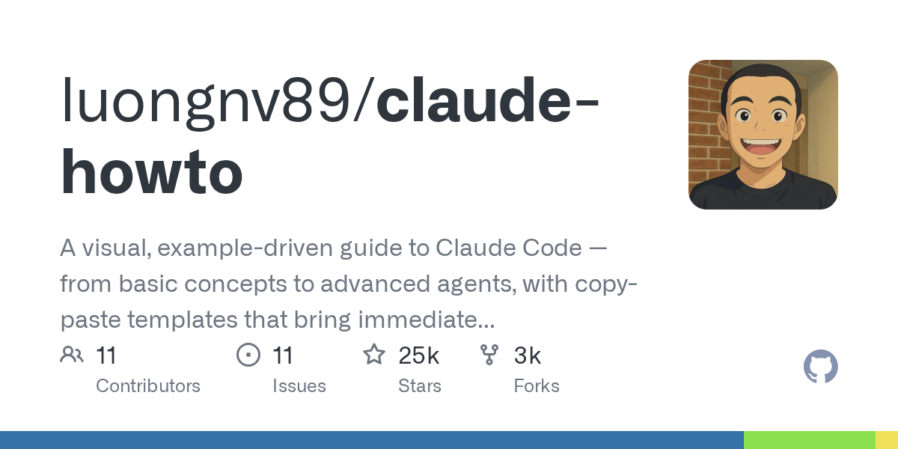
Claude Code의 슬래시 명령어가 65개로 늘어나면서 사용자들이 혼란을 겪고 있다. 이 콘텐츠는 Anthropic 공식 문서를 전수조사하여 85개의 모든 명령어를 분류하고, 일상 업무의 90%를 커버하는 6가지 핵심 명령어를 우선순위로 제시한다. clear, compact, cost, model, plan, resume 등 자주 사용되는 명령어와 업무 흐름을 끊지 않는 추가 명령어들을 구체적인 사용 사례와 함께 설명한다.
핵심 포인트: 핵심 성과: 85개 명령어 중 6개 핵심 명령어로 일일 작업의 90%를 커버할 수 있으며, 각 명령어별 구체적인 사용 시점과 효율성 향상 방법을 실제 코딩 시나리오에 맞춰 제시한다.
🔗 github.com/luongnv89/claude-howto
기타 (Others)
Taste Skill — AI 프론트엔드의 밋밋한 디자인을 전문적으로 개선하는 스킬
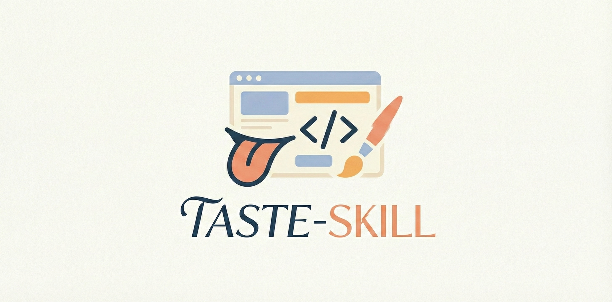
AI 코딩 도구가 생성한 프론트엔드는 기능은 하지만 AI가 만든 티가 나는 밋밋한 디자인이 특징이다. Taste Skill은 4개의 구성 요소로 이 문제를 해결한다. 메인 디자인 스킬을 중심으로 레이아웃, 타이포그래피, 색상, 여백, 모션을 개선하며, 사용자가 세 가지 파라미터(Design Variance, Motion Intensity, Visual Density)를 1~10 사이의 숫자로 조절하여 같은 프로젝트도 완전히 다른 느낌의 디자인을 생성할 수 있다.
핵심 포인트: 핵심 기여: 세 가지 핵심 파라미터 조정으로 레이아웃의 실험성, 애니메이션 강도, 화면 밀도를 독립적으로 제어하여 프로페셔널한 프론트엔드 디자인을 생성한다.
🔗 github.com/Leonxlnx/taste-skill
기타 (Others)
Feynman: Claude Code 기반 AI 연구 에이전트
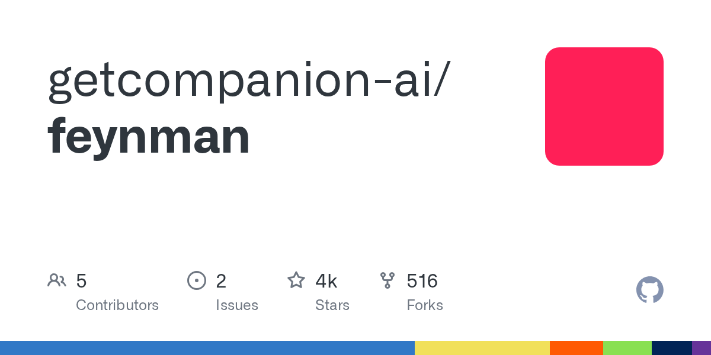
논문 분석 시 출처 추적, 실험 검증, 감사(audit) 과정을 자동화하는 데 어려움이 있다. Feynman은 MIT 라이선스 오픈소스 에이전트로, 사용자의 질문에 따라 논문을 자동 검색 및 분석하고 메타 분석 리포트를 생성하며, RunPod에서 GPU를 활용하여 실제 실험을 복제하고 피어 리뷰를 수행한다. 모든 결과물에 직접 링크된 출처가 포함되어 환각 가능성을 원천 차단한다.
핵심 포인트: 핵심 기여: Pi 에이전트 런타임 위에서 alphaXiv 논문 검색, 스킬 기반 모듈식 구조로 자유로운 확장 지원, Claude Code 없이도 스킬 개별 설치 가능하며 Codex와도 연동 가능한 구조 제공
🔗 github.com/getcompanion-ai/feynman
GitHub
ENGINEERING
Claude Code: AI 에이전트 설계의 8가지 핵심 원칙
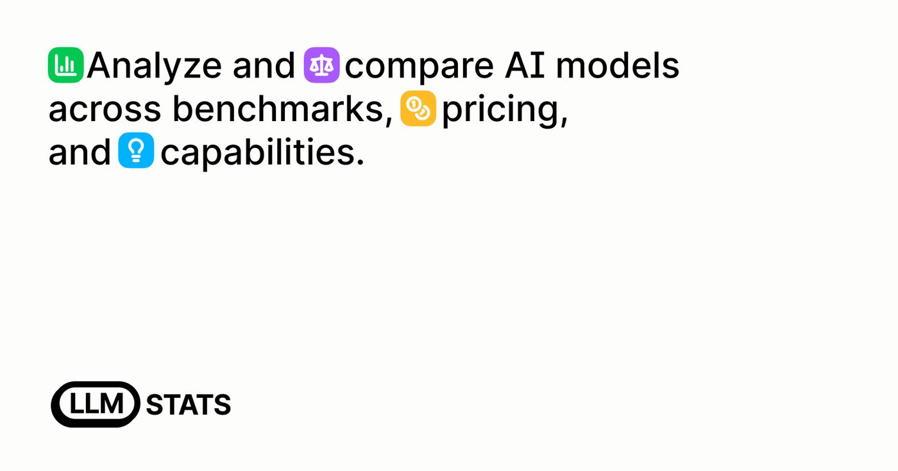
Claude Code 유출 사건을 통해 공개된 내부 아키텍처 분석. AI 에이전트 시대의 핵심 설계 원칙으로 비용 최적화(4단계 자동 압축), 직원 전용 도구 분리(USERTYPE 조건), 안전장치(AI 심판 시스템), 병렬 실행 최적화, 8단계 설정 우선순위, 원격 기능 제어(GrowthBook 킬스위치) 등을 제시한다. 응답 생성 중 읽기 도구는 병렬 실행하고 쓰기 도구는 순차 실행하는 설계로 체감 속도를 향상시킨다.
핵심 포인트: 핵심 기여: Claude Code는 비용 효율성을 최우선으로 설계되었으며, 에러 발생 시에도 멈추지 않고 단계별 대체 방법을 시도하는 복원력 있는 시스템과 AI 감시자를 통한 안전성 검증, 그리고 서버 기반 원격 킬스위치를 통해 배포 후 즉시 기능 제어가 가능한 프로덕션 운영 모델을 구현했다.
기타 (Others)
Claude Code — 토큰 소모 버그 원인 규명 및 패치
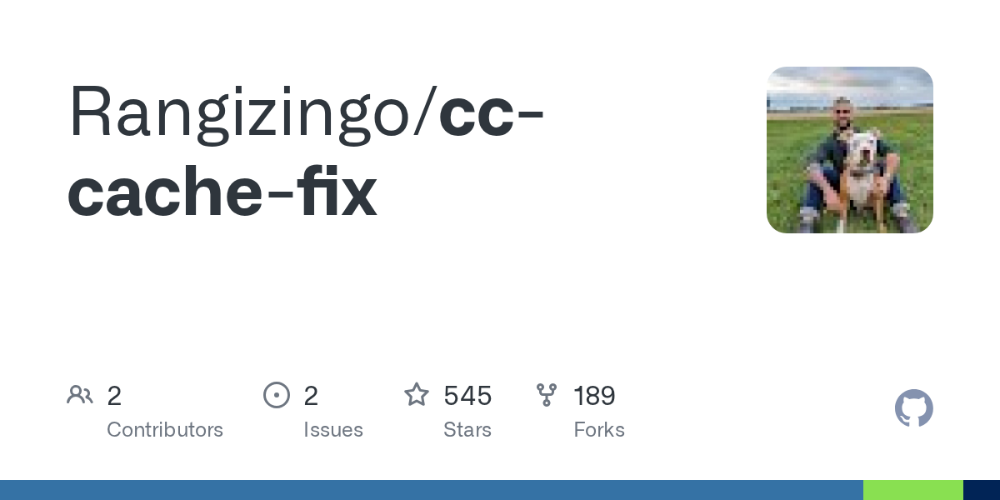
Claude Code 사용자들이 세션을 이어갈 때 토큰이 비정상적으로 소모되는 문제를 경험했다. Reddit 사용자 Rangizingo가 유출된 소스코드를 분석해 원인을 발견했다. db8 함수에서 attachment 타입 메시지를 삭제할 때 deferredtoolsdelta 기록도 함께 제거되어, 매 세션마다 전체 도구 목록을 처음부터 안내하게 되고 이로 인해 메시지 배열 구조가 변경되어 캐시가 작동하지 않는 문제였다. 2줄짜리 패치 적용 후 캐시 적중률이 26%에서 99%로 향상되었다.
핵심 포인트: 핵심 성과: 캐시 적중률 26%에서 99%로 개선, 세션 재개 시 턴 2 이후 캐시 비율 99% 유지, 2줄의 간단한 패치로 근본적인 토큰 소모 문제 해결
🔗 github.com/Rangizingo/cc-cache-fix
GitHub
Harness Engineering — AI 에이전트의 반복적 개선을 위한 운영 레이어 설계
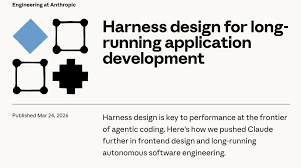
AI 코딩 에이전트가 같은 실수를 반복하고 장시간 작업에서 맥락을 잃는 문제를 해결하기 위해 모델 외부에 운영 구조를 구축하는 Harness 엔지니어링 방법론을 제시한다. 시스템 지침, 상황별 실행 문서, 자동 강제 장치, 기억과 학습 문서의 4개 레이어로 분리하여 사람과 에이전트가 협력하는 저장소에서 개발 품질을 일관되게 유지하고 새 프로젝트에 빠르게 적용할 수 있도록 한다.
핵심 포인트: 핵심 기여: 모델 교체가 아닌 harness 개선을 통해 에이전트의 반복 실패를 시스템 규칙으로 흡수하고, 4계층 분리 아키텍처로 이식 가능한 공용 운영 매뉴얼을 실현하며, 훅과 체크리스트의 자동화로 사람의 의지보다 강한 강제력을 확보한다.
🔗 digitalbourgeois.tistory.com/m/2923
기타 (Others)
PRODUCT & INDUSTRY
Everything — 문서 내용 기반 오프라인 검색 엔진
기존 파일명 기반 검색의 한계를 벗어나 문서 내용과 맥락을 이해하는 검색 솔루션. 한글, 워드, 엑셀, PDF, TXT 등 다양한 문서 형식을 지원하며 100% 오프라인 환경에서 작동하여 보안 우려를 제거한다. 사용자의 인덱싱 시간을 고려한 성능 최적화로 실무 환경에 즉시 적용 가능한 문서 검색 도구이다.
핵심 포인트: 핵심 기여: 오프라인 환경에서 작동하는 완전 보안형 문서 검색 엔진으로, 파일명이 아닌 내용과 맥락 기반 검색을 제공하며 한글 포함 5가지 문서 형식을 동시 지원한다.
기타 (Others)
OpenAI — Codex를 Claude Code에 통합하는 공식 플러그인 공개
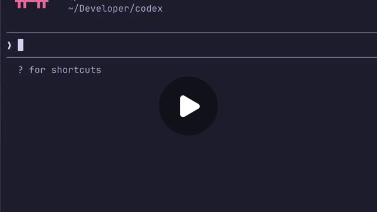
개발자들 사이에서 Claude로 코드 구조를 작성하고 GPT-5.4 기반 Codex로 오류 검증 및 복잡한 연산을 수행하는 멀티 모델 교차 검증 워크플로우가 확산되고 있다. OpenAI가 이 작업 흐름을 공식적으로 지원하기 위해 Anthropic의 Claude Code 내에서 Codex를 직접 호출할 수 있는 플러그인을 개발 및 공개함으로써, 각 AI 모델의 강점을 활용한 멀티 모델 워크플로우가 새로운 표준으로 정착되는 추세를 나타낸다.
핵심 포인트: 핵심 기여: 서로 다른 AI 모델의 장점을 결합하는 멀티 모델 워크플로우를 공식화하여, 단일 모델 의존도를 탈피하고 코드 생성부터 검증까지 전체 개발 프로세스에서 최적화된 AI 조합 활용을 가능하게 함.
🔗 threads.com/@choi.openai/post/DWhpzLCFMXS…
기타 (Others)
Claude Code — iMessage 플러그인으로 문자메시지로 AI 작업 지시
Mac과 iPhone 사용자가 기존의 메시지 앱을 통해 Claude에게 직접 작업을 지시할 수 없다는 문제를 해결하는 공식 플러그인 출시. iMessage 플러그인을 설치하면 문자 메시지로 Claude에게 회의록 정리, 파일 분석 등의 작업을 요청할 수 있으며, Claude가 사용자의 Mac에서 직접 실행한다. 여러 사람을 초대하여 함께 사용 가능하고, 외부 서버 없이 100% 로컬에서 동작한다.
핵심 포인트: 핵심 기여: 간단한 터미널 명령어로 설치 가능하며, 로컬 처리 방식으로 개인정보 보호와 응답 속도를 동시에 확보. 가족 공유 기능과 휴가 중 업무 위임, 소상공인 고객센터, AI 매니저 등 다양한 활용 시나리오 제시.
🔗 threads.com/@metalailab/post/DWWbo2agYMg?…
기타 (Others)
Claude Code Auto Mode — AI 승인 피로 해결하는 자동 권한 관리
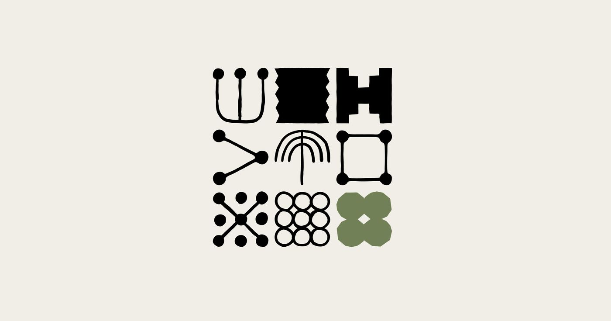
Claude Code 사용자가 권한 요청의 93%를 무심코 승인하는 승인 피로 문제를 Anthropic이 인정하고 해결했다. 기존에는 안전하지만 복잡한 샌드박스 모드와 편하지만 위험한 권한 무시 플래그 중 선택해야 했다. Auto mode는 프롬프트 인젝션 탐지기와 트랜스크립트 분류기의 이중 방어 구조로 위험한 명령만 자동으로 거부하면서 높은 자율성과 낮은 유지비용을 동시에 제공한다.
핵심 포인트: 핵심 성과: 사용자 승인 부담을 제거하면서 자동화된 이중 필터링으로 프롬프트 인젝션과 위험 명령을 사전 차단, 안전성과 편의성의 트레이드오프를 동시에 해결.
🔗 anthropic.com/engineering/claude-code-aut…
기타 (Others)
Anthropic Economic Index: AI 사용자 격차 심화와 사용 패턴 변화
AI 도구 사용 경험에 따라 사용자 간 성과 격차가 벌어지고 있다는 문제를 앤트로픽의 경제 지수 보고서가 제시한다. 오래 사용한 사용자는 더 어려운 고부가가치 작업에 AI를 활용하며 높은 성공률을 달성하는 반면, 대중화에 따라 기술 채택 곡선을 따르며 일상적 용도로의 활용이 증가하고 있다. 코딩 작업의 API 이동, 개인 용도 증가(35%→42%), 자동화보다 증강 중심의 협업 패턴 확산 등 사용 행태 다양화를 보여준다.
핵심 포인트: 핵심 성과: 2월 2026년 조사에서 작업 다양성 증가(상위 10개 작업 집중도 24%→19%), AI 증강 협업 패턴 소폭 상승, 초기 수용자와 대중 사용자 간 작업 가치 격차 확대(시급 기준 49.3달러→47.9달러).
🔗 anthropic.com/research/economic-index-mar…
기타 (Others)